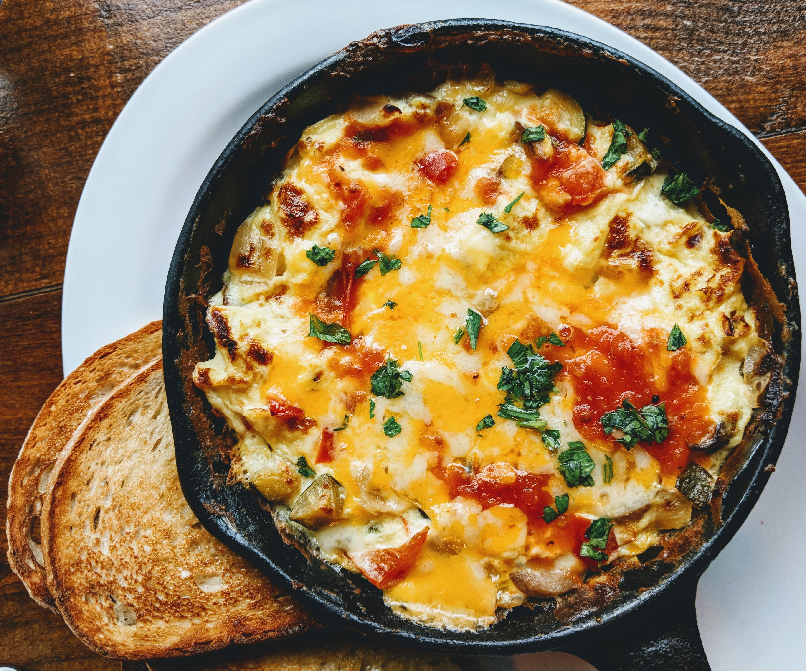

Omelette

A fairly basic recipe for the kind of omelette that I used to make as soon as I was old enough to handle a hot stove.
Ingredients
- 3 eggs
- A handful of fresh basil
- A dash of milk
- 1/4 cup grated sharp cheddar
- 1/4 cup rotissere chicken, chopped
- Old Bay to taste
- 1 tbsp unsalted butter
Steps
- Crack the eggs into a bowl and add a dash of milk and Old Bay.
- Stir well, making sure to break the yolks.
- Add the butter to the pan and let sit until melted.
- Pour in the eggs and then add the chicken.
- Stir until fluffy, then add cheese.
- Flip over and garnish with basil.